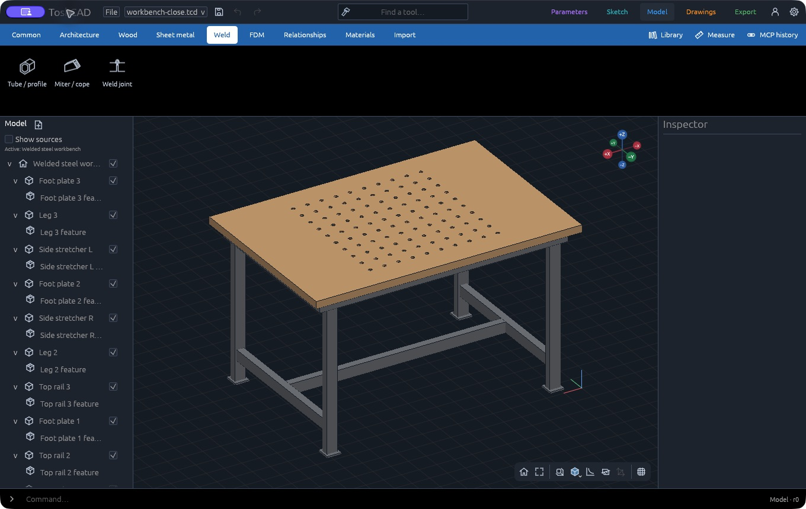
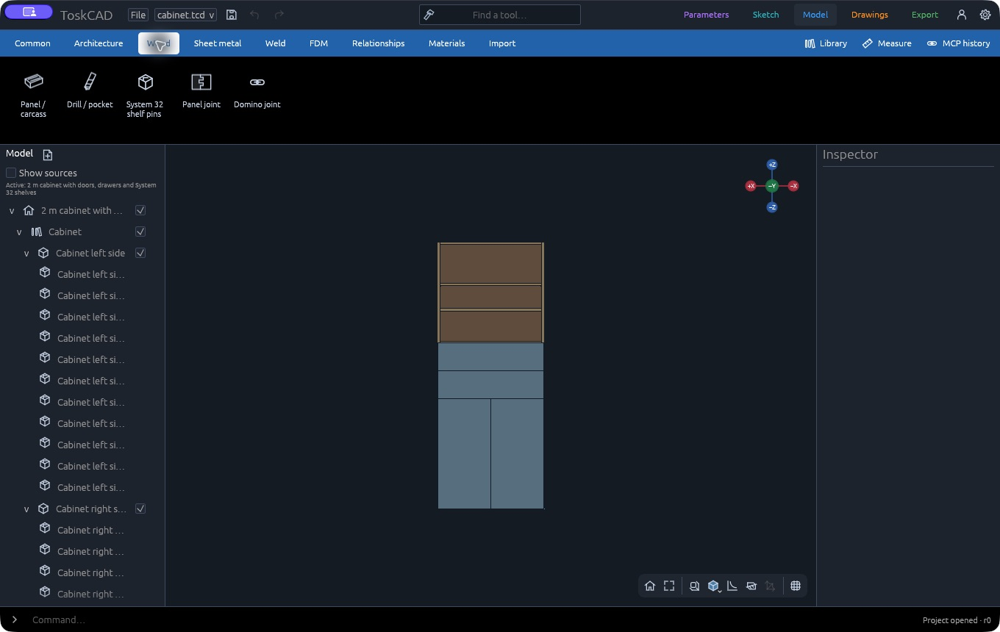
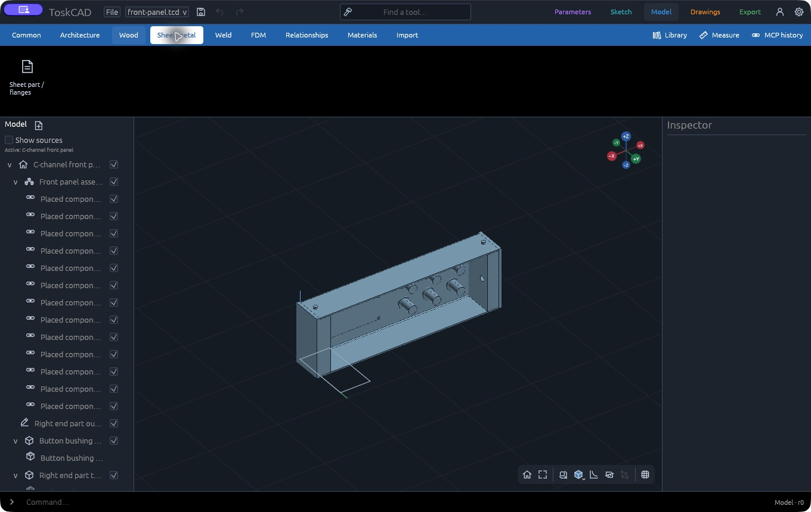
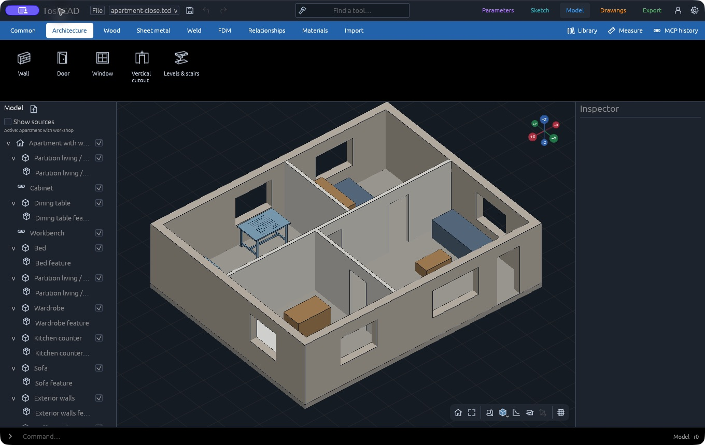
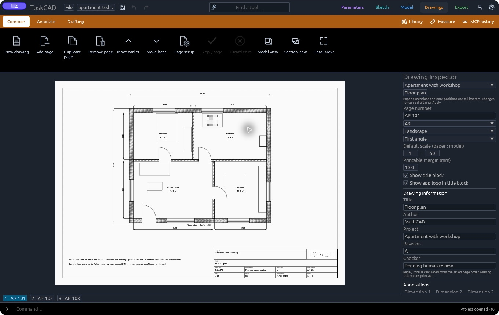

Native parametric CAD.
Start with a sketch or a 3D model. Build your parts, adjust their dimensions and make drawings in an open-source desktop app written in Rust.
Build from sourceTry a real project.
These projects come with ToskCAD. Open one from Examples to get your own editable copy.

Welded workbench.
This workbench combines a welded tube frame with a beech worktop. The holes in the top have their own diameter, spacing and edge offsets.
Try changing the overall size or the hole pattern. The example also includes drawings and schedules. It is a geometry example, with no load rating or weld-strength approval.
Built-in workbench example · macOS, October 31, 2026.

Plywood cabinet.
A plywood cabinet with doors, drawers and adjustable shelves. Change its width, depth or height in Parameters and rebuild the model.
The project includes hardware from a separate library, saved door and drawer positions, and drawing pages with parts and machining schedules.
Built-in cabinet example · macOS, October 31, 2026. Click the image for the full-size screenshot.

Aluminium front panel.
A bent aluminium panel holds six buttons and a display, with printed end parts screwed through its flanges. You can edit the panel dimensions and the positions of the openings.
It brings sheet metal and printed parts together in one project. The buttons and display are illustrative models, so check actual hardware dimensions before making it.
Built-in front panel example · macOS, October 31, 2026.

Apartment with workshop.
The apartment has editable walls, doors and windows, plus a workshop that uses the cabinet and workbench as linked projects.
Its drawing book includes a floor plan and workshop sheet. It is a layout example, without structural or building-code approval.

View the measured floor plan ↗Built-in apartment example · macOS, October 31, 2026.
Five modes, one project.
You can begin with a sketch or work directly on a 3D model. Each stage has its own place in the application.
- Parameters and Sketch
- Keep dimensions and formulas in Parameters. In Sketch, draw a profile and add the dimensions and constraints it needs.
- Model
- Build and edit parts in 3D. Choose the tools for the job: Wood, Sheet metal, Weld, Architecture or FDM. These workbenches share the same model, so you can use their tools together.
- Drawings and Export
- Make drawing pages from the model, add dimensions and notes, then prepare your files in Export. Print preparation and render handoff live there too.
Still in development.
ToskCAD uses Rust and the Open CASCADE geometry kernel. The desktop UI and local MCP server work on the same project document, so external applications can inspect and edit it with a record of their changes.
We test the application interactively on macOS. Windows and Linux need their own build and runtime checks. Some workflows are unfinished, and project formats can still change.
If you plan to make something from an output, read the verification notes for that workflow first.